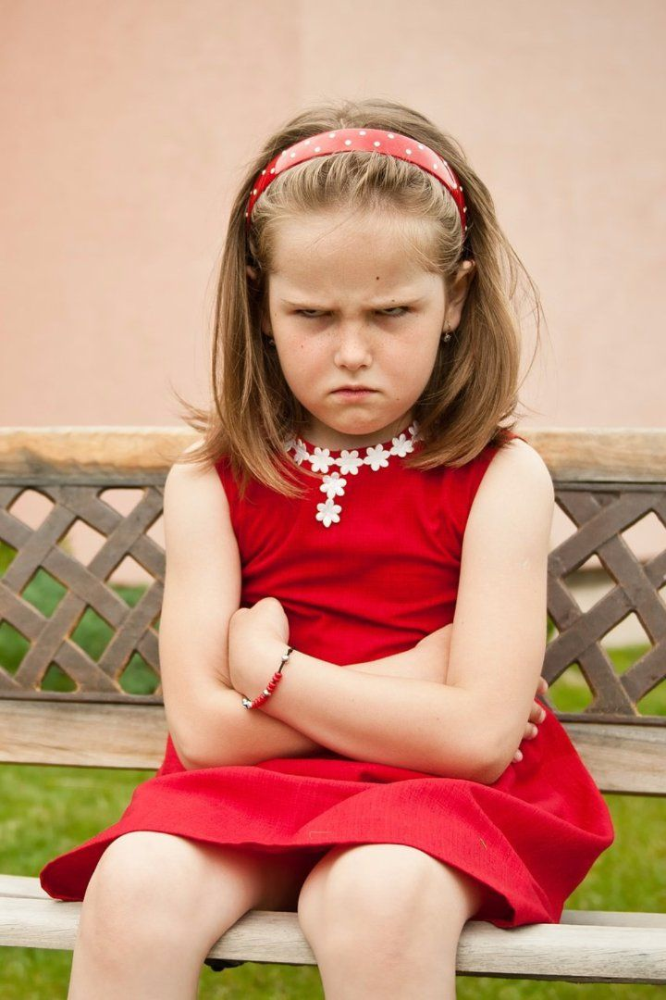
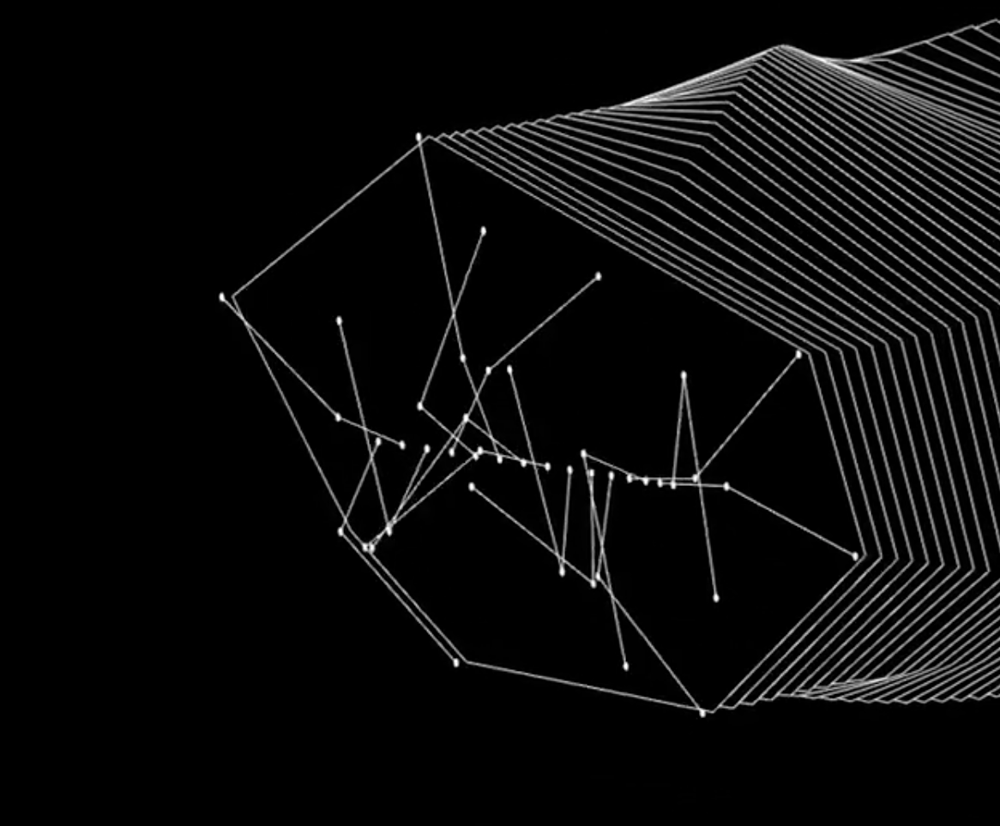
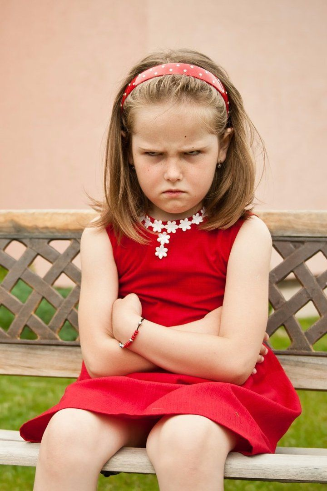
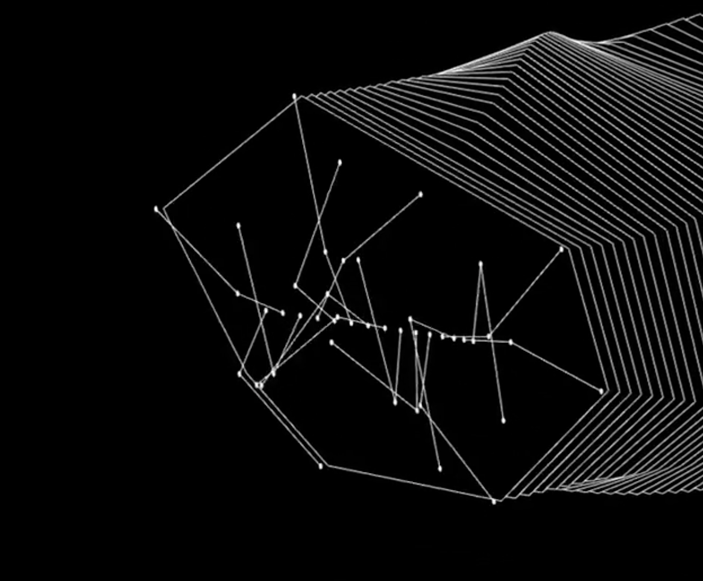
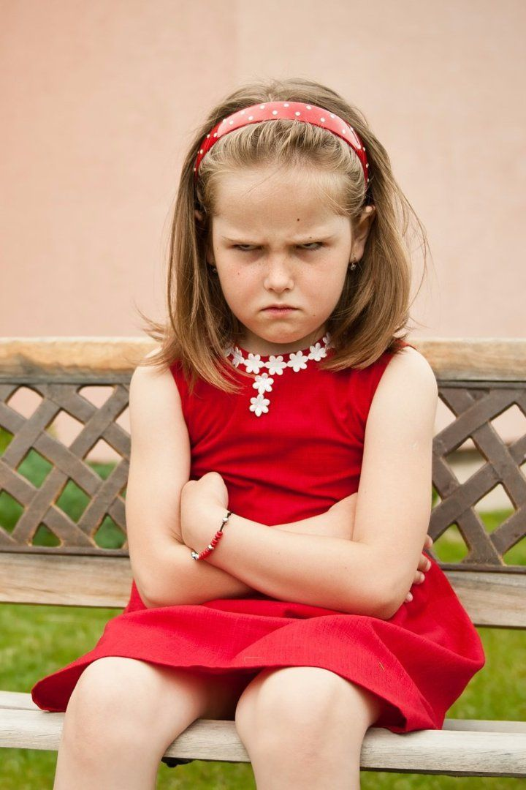
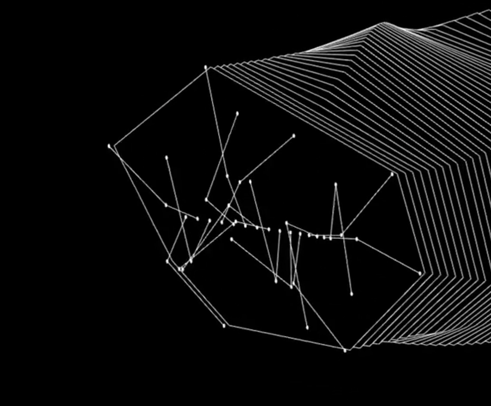
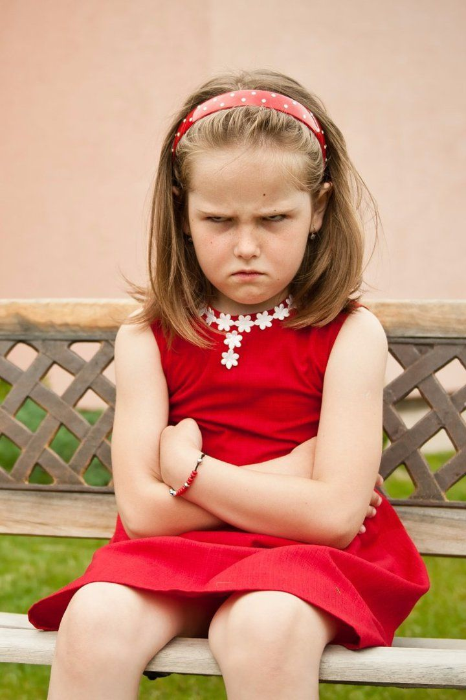
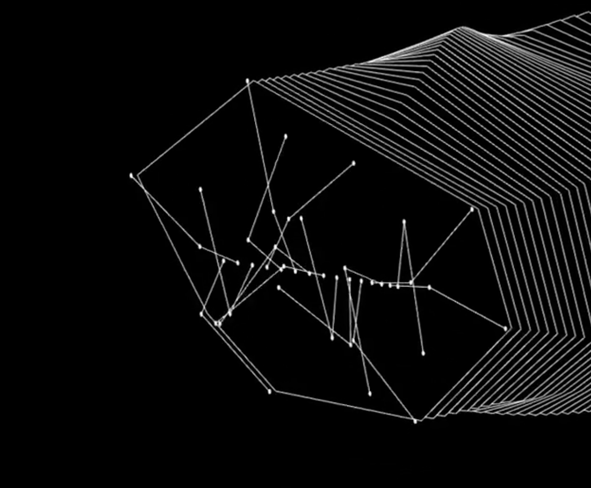

De grafisch ontwerper: van signpainter met grove borstel naar ontwerper aan de compacte laptop.
We trachten grafisch ontwerp te rationaliseren aan de hand van grid, gouden snede, wiskundige formules, kleurenleer… Dit helpt ons al aardig op weg maar toch, zonder een portie intuïtie, raken we niet ver. Intuïtie helpt ons om knopen door te hakken en in het vinden van nieuwe oplossingen (m.a.w. in het creatief zijn). Carl Jung beweerde een eeuw geleden dat we geboren zijn met een collectief onderbewustzijn. Dit onderbewustzijn bestaat als het ware uit abstracte oerwaarheden. Symbolen en voorstellingen in de kunst zijn allemaal slechts een poging om deze abstracte waarheid op concrete wijze weer te geven. Handelen vanuit dit onderbewustzijn zou daarom een meer directe voorstelling creëren (kijk ook allegorie van de grot) die minder uitgaat van cultuurgebonden symbolen. (hier ook aanhalen: outsider art)
Geest en lichaam zijn onlosmakelijk met elkaar verbonden. Me hierin volgen is essentieel om de volgende stappen van mijn thesis te begrijpen en aanvaarden. Het samengaan van geest en lichaam klinkt voor mij evident maar terugkijkend in de geschiedenis is dit zeker niet altijd het geval geweest. Denk hierbij aan het dualisme van Descartes maar ook aan andere filosofen die de geest of het denken boven de materiele wereld verheffen. Ook de Islam en het Christendom stellen de geest boven het lichaam en geloven dat de geest verder leeft na de dood.
Uit onderzoek blijkt dat bewegen helpt in het creatief denken. Zo zouden we tijdens het bewegen, creatievere oplossingen kunnen vinden en beter zijn in het divergeren. Wel blijkt dat we stilstaand beter zijn in het convergeren. We kunnen dus stellen dat beweging in het begin van ons proces kan helpen om de mogelijkheden af te tasten maar dat zitten ons van pas komt wanneer er knopen moeten worden doorgehakt.
Grafisch ontwerp is niet langer louter een toegepaste kunst: Meer en meer grafisch ontwerpers, een groeiende hoeveelheid platformen waarin je zonder voorkennis grafisch ontwerper kan zijn, online tutorials, een markt waarin onderscheiding belangrijker wordt als conformiteit… We moeten ons kunnen onderscheiden om niet te verdrinken in de gigantische grafische zee die vandaag bestaat. Persoonlijkheid en uiterlijk is een van onze enige bezittingen waarvan we weten dat er nooit een exacte kopie kan bestaan. Uitgaan van onze emoties en lichaamsbouw creëert al van het begin af aan een uniek ontwerp wat geen tweede keer gemaakt kan worden.
Het bewegen hangt van nature uit, vast aan emotie: grote vloeiende bewegingen bij geluk, kleine abrupte bewegingen bij angst of stress… Nu blijkt dat emotie gebonden bewegingen niet persoonlijk maar universeel en aangeboren zijn. In het ontwerp kunnen we hier dankbaar gebruik van maken. Denk hierbij aan Francis Bacon die met zijn ruwe en directe lijnvoering de agressieve kant in schilderijen extra op de voorgrond zette. Op de laptop kunnen we deze manier van ontwerpen die van nature in ons lichaam zit, niet gebruiken. Naast het natuurlijk uiten van emotie via beweging, kunnen we door het kennen van bewegingspatronen bepaalde emoties eigen maken. We kunnen hierdoor ons doelbewust in een stemming of setting zetten die strookt met het resultaat wat we willen bereiken. (Stom voorbeeld: Een klant met een bedrijf in springkastelen wil een logo. Dit logo moet plezier en geluk uitstralen. Door uitvoering van vrolijke bewegingspatronen gaan we dit gevoel internaliseren wat een beter begrip en daardoor beter ontwerp zal leveren) Een ander voorbeeld is het gebruik van beweging in Motion design uitgaand van de menselijke beweging
Een juiste houding is belangrijk voor verschillende zaken, denk bijvoorbeeld aan nek en rugklachten, toename van obesitas door zittend werk… Naast de fysieke factor heeft houding een belangrijke invloed op de psychische gezondheid. Zoals eerder gezegd hangt emotie vast aan beweging en vice versa. Dit geld evenzeer voor de houding van het lichaam. Met de laptop en telefoon zijn we vaak gedwongen ons hoofd naar beneden te keren, onze schouders samen te trekken, onze rug te bollen… Deze houding is een “laag-zelfvertrouwen houding”. We zien er minder zelfzeker uit maar voelen ons hierdoor ook minder zelfzeker. Weinig bewegen heeft verder invloed op ons cognitief vermogen: slechter en trager denken, ook zijn er aanwijzingen dat we minder productief zijn, minder energie hebben en dat ons gemoed word aangetast door ons sedentair statisch gedrag.
Wat zijn de mogelijkheden als we beweging willen betrekken in het moderne designproces (zonder daarbij terug te moeten gaan naar kwast en verf)? Kunnen we beweging terugbrengen op de laptop, in de studio…? Denk hierbij aan de staande bureau, de loopband bureau, de zitbal… maar denk evenzeer aan schetsen in de ruimte zoals google tilt brush, smartboards… misschien is altijd kleiner en compacter niet de juiste oplossing.